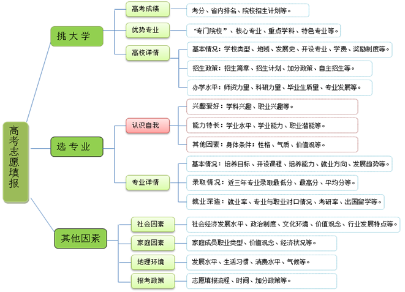

结果报告书
亲爱的同学：
您好！ 非常感谢您选择了“升学指导测验—专业选择测试”来辅助自己规划未来的职业生涯。希望我们的测评报告会对您的专业选择提供有效的帮助。
本测试为考生在高考专业选择时提供的一种参考意见，并不表明我们推荐的适合测试者学习的专业结果可作为唯一的专业报考依据，考生应结合自己的实际状况，参考本报告，认真选择大学专业。
-
导 读
我们都知道人与人在很多方面是不同的，每个人既有与他人相似的一面，也有自己独特的一面。例如，有的人喜欢与很多人聚在一起，聊一些关于哲学、生命等比较深入的话题，或者谈谈娱乐新闻、茶米油盐等日常生活的话题；有的人则比较喜欢独处，面对很多人的时候则显得沉默寡言，甚至是无所适从，但如果让他们组装电脑或是修理家用电器时，他们那种专注投入、乐享其中的状态简直让人吃惊。由此可知，无论哪种类型的人，都既有自身独特的优势，也有不容忽视的劣势，只有扬长避短，才能最大限度地发挥自己的优势。
怎样才能最大限度发挥优势呢？
许多研究表明，人可以分成几个类型，每种类型各有独特特征。我们面临的各种职业也可以划分为相对应的几种类型。当某种类型的人从事与之相对应的职业时，较易发挥所长，做到事半功倍；而在其它类型的职业中发展，可能较难发挥特长，往往事倍而功半。因此，个人与职业在类型上的“匹配”是很重要的。对于准备升学的高中毕业生来说，选择好与自己类型相符的大学专业，才有可能实现将来与职业的最佳“匹配”。
国外在升学与就业指导方面已有几十年的发展历史，当学生面临升学和就业的时候，许多学校都会辅以多种心理测验，帮助学生进一步了解自己的兴趣、爱好、能力和人格特征等，为他们选择大学志愿和职业提供参考意见。美国大学考试中心（ACT）更是将升学指导摆在重要的位置上，并与高考报名紧密的结合起来，考生报名时要同步进行心理测试。学生除了得到高考成绩以外，还会得到一个专业选择建议，这些建议就是来源于心理测验的结果。
为了帮助学生更加清楚的了解自己，根据自己的特点科学合理地选择专业和职业，1999年，教育部考试中心借鉴国外考试机构的成功经验，征得了教育部基础教育司、教育部高校学生司的支持，聘请国内著名心理学专家、国际心理科学联盟副主席张厚粲教授担任课题组组长，由多名国内专家教授组成了课题组，开始进行专项研究。历时多年，课题组成功开发了《升学指导测验》（现为“升学指导测验-专业选择测试”），建立了一个符合中国国情的、科学性和实用性较强的升学指导测验系统。课题于2001年10月通过了权威学术机构的鉴定，并被列入全国教育“十五”科研课题成果。随着大学专业设置的调整与变革，以及社会文化的发展与进步，我们根据受测学生的反馈，对“升学指导测验-专业选择测试”加大研究力度，并与各省招办充分合作，不断推陈出新，不仅完善了测试本身，还为学生提供丰富的网上服务资源。为了帮助学生找到最佳匹配点，找准人生定位，我们一直在努力！
测试帮你了解自我，规划人生
我们应该及早树立人生的目标，读书的目的不仅仅是为了上大学，最终是为了从事对社会有益的工作来回报社会。本测试将帮助你了解自我，从而更好地规划自己的发展方向。测试结果报告书给出了你的兴趣和发展潜力，应该说它基本反映了你的先天因素和从小到现在的环境影响，这些将作为重要因素影响你的今后发展。不过，巨大的环境影响和主观能动性也会使之有所变化。因此，积极、正确地使用测试结果，了解自我，了解社会，不断地规划前进的方向，是非常重要的。
-
测 试 结 果 及 解 释 说 明
根据测试信息，我们为您提供了测试结果分析、特征解释和一些专业选择建议，希望它能帮助您挑选出理想的专业，协助您完成人生中一次重要的选择。
一、测试结果分析
升学指导测验-专业选择测试”的职业兴趣测验部分将所有人的职业兴趣分为七种类型，分别是技术型、自然型、研究型、艺术型、社会型、经营型和事务型，职业胜任力测验主要测查的是学生完成与七种职业兴趣类型相关的活动或工作的把握程度，也分为对应的七种类型。
下图为测试结果剖析图，黄色柱体代表学生在各个兴趣类型上的得分，红色柱体代表学生在各个能力类型上的得分，这两个得分表明了学生的兴趣和能力在其同年龄群体中的相对位置。得分越高表示学生从事该活动的兴趣越浓，或者越有可能完成该类活动，这也是我们推荐专业的基本依据。
根据您的兴趣类型，我们可以做出下面的解释：
从兴趣特点来看，您与下述类型的人比较相近。这一类型的人稳重、踏实、细致、热情，在人与事物之间，偏爱与具体有形的事物打交道，具有一定的实干精神，喜欢利用各种工具、设备制作出具有实用价值的物品或解决实际问题，在工作和学习上具有一定的韧性，面对困难不肯轻易放弃。
他们在工作和学习上细致认真，一丝不苟，讲求精确，常常注意到大家容易忽略的问题，有比较强的计划性，不喜欢没有秩序的环境，希望从事规则性比较强的工作；他们还对自然界中的事物比较感兴趣，喜欢户外活动，期望通过自己的亲身实践更多地了解各种动植物的生活习性和生长发育规律。
他们平时对模型制作、器具组装、物品维修等活动比较感兴趣，还喜欢饲养小动物、培育花卉，插花、集邮、彩绘等活动也能吸引他们的注意力。
从您的测验中还可以看出，您在技术类、事务类的职业活动中对自己非常有信心，这是您将来从事技术类、事务类职业的有利条件。
二、专业选择对照表
2012年，教育部颁布了《普通高等学校本科专业目录（2012年）》。新目录规定了专业划分、名称及所属门类，是设置和调整专业、实施人才培养、安排招生、授予学位、指导就业，进行教育统计和人才需求预测等工作的重要依据。为了给考生提供更及时、更全面的专业信息，我们在原有249种专业基础上，参照新目录进行了必要的调整和添加，推荐专业在升级后基本涵盖了所有基本专业，同时还包含部分特设专业。其中专业名称后不带字母的为基本专业，有字母“K”的为基本专业中的国家控制布点专业，有字母“T”的为特设专业，有字母“TK”的为特设专业中的国家控制布点专业。
下表为根据您前面的测试结果，以及我们对高校各个专业特点的研究与分析，为您提供的不同适应程度的专业选择信息。其中：
1.★★★代表您各方面都非常符合该专业的要求，是我们强烈向您推荐的专业 ，建议您在选择专业的时候优先考虑。
2.★★代表您在多方面都比较符合该专业的要求，是我们重点向您推荐的专业，建议您在选择专业的时候重点考虑。
3.★代表您的某些特点基本上符合该专业的要求，为一般推荐专业，也是您选择专业的时候可以考虑的范围。
4.×代表您的特点非常不符合该专业的要求，您不太适合选择该专业，建议您慎重选择该专业。
学科门类专业名称法学 法学类 法学(K) × 文学 新闻传播学类 广告学 × 传播学 × 理学 物理学类 应用物理学 ★★★ 工学 机械类 机械工程 ★★★ 机械设计制造及其自动化 ★★★ 过程装备与控制工程 ★★★ 机电技术教育(T) ★★★ 仪器类 测控技术与仪器 ★ 材料类 金属材料工程 ★★ 能源动力类 能源与动力工程 ★★★ 电子信息类 电子科学与技术 ★★ 土木类 土木工程 ★★★ 建筑环境与能源应用工程 ★★★ 建筑电气与智能化 ★★ 城市地下空间工程(T) ★★★ 道路桥梁与渡河工程(T) ★★ 水利类 港口航道与海岸工程 ★★ 矿业类 油气储运工程 ★★★ 纺织类 非织造材料与工程(T) ★★ 交通运输类 航海技术 ★★★ 轮机工程 ★★★ 飞行技术 ★★★ 海洋工程类 船舶与海洋工程 ★★★ 航空航天类 飞行器设计与工程 ★★★ 飞行器制造工程 ★★★ 飞行器动力工程 ★★★ 兵器类 武器系统与工程 ★★ 武器发射工程 ★★ 探测制导与控制技术 ★★★ 弹药工程与爆炸技术 ★★ 特种能源技术与工程 ★★★ 装甲车辆工程 ★★★ 信息对抗技术 ★ 核工程类 核工程与核技术 ★★★ 辐射防护与核安全 ★★★ 工程物理 ★★★ 核化工与核燃料工程 ★★ 农业工程类 农业建筑环境与能源工程 ★★ 环境科学与工程类 环境工程 ★★ 建筑类 建筑学 ★★★ 安全科学与工程类 安全工程 ★★ 农学 植物生产类 植物保护 ★★ 应用生物科学(T) ★★ 管理学 管理科学与工程类 管理科学 × 工商管理类 市场营销 × 会计学 × 财务管理 × 公共管理类 行政管理 × 劳动与社会保障 × 土地资源管理 × 旅游管理类 旅游管理(K) × 酒店管理 × 艺术学 设计学类 艺术设计学 × 视觉传达设计 × 说明：除了上面推荐您的专业以外，正式填报志愿时，您也可以综合考虑其他因素，例如社会环境变化、自己的价值观、家庭的影响等等。
三、部分推荐专业介绍
为了帮助您更好地了解适合自身学习的专业，下面将根据上述测验结果，从适合您选报的专业中选择五类专业，简要介绍其相关的学习内容。其他您感兴趣的专业请登录测试网站进入相关栏目查询。
本报告中基本专业的专业介绍信息主要为2012年教育部颁布的《普通高等学校本科专业目录（2012年）》中对具体专业的介绍，对于特设专业的专业介绍，由于未找到教育部公布的相关介绍资料，因此本测试相关资料来源于各院校高招办或学校网站。在此特别声明：我们提供该类信息的目的在于为高考生提供更多信息作为参考，请以各高校正式公布数据为准。
船舶与海洋工程（海洋工程类）
培养目标：
本专业培养具有良好的思想道德素质、较高的人文科学修养和创新意识，适应社会经济发展需要，德、智、体等方面全面发展，具有扎实的数学和力学基础，掌握船舶与海洋工程基本理论和专业知识，具备从事该行业工作所必需的基本技能，能够从事船舶与海洋结构物研究、设计、建造、检验、维修和管理等工作的高素质工程科技人才。
培养要求：
本专业学生主要学习数学、物理、力学、船舶与海洋工程、海洋工程环境学等方面的基本理论和专业知识，接受工程制图、力学分析、结构设计、工艺技术、计算机辅助工程、工程管理等方面的系统训练，形成研究、设计和建造船舶与海洋工程结构物的基本能力。
毕业生应获得以下几方面的知识和能力：
1. 具有良好的工程职业道德、社会责任感、人文科学素养和创新能力；
2. 掌握数学、力学、船舶与海洋工程的基本理论和基本知识；
3. 掌握船舶和海洋结构物的力学分析方法、没计建造和施工管理等方面的专业知识；
4. 具有应用计算机进行分析、设计、制图和工程管理的能力；
5. 熟悉船舶与海洋工程领域的法规制度、行业要求、海事公约和规范标准；
6. 了解船舶和海洋工程开发研究的学术前沿和先进设计制造理念；
7. 具有从事船舶与海洋结构物设计、建造和开展船舶与海洋工程领域科学研究、技术创新的基本能力；
8. 具有一定的批判性思维和良好的团队合作精神，具有良好的书面和口头表达的能力。主干学科：船舶与海洋工程、力学。
核心知识领域：力学、工程图学、、船舶与海洋结构物设计、建造工艺、结构物性能等。
核心课程示例：
示例一：理论力学（68学时）、材料力学（68学时）、工程图学（34学时）、船舶动力系统（51学时）、船舶写海洋工程结构设计（51学时）、现代造船技术（43学时）、船体构造与制图（51学时）、船舶流体力学（68学时）、船舶结构力学（68学时）、船舶设计原理（51学时）、船舶原理Ⅰ、Ⅱ（119学时）。
示例二：理论力学（72学时）、材料力学（64学时）、工程图学（70学时）、流体力学（72学时）、船舶结构力学（64学时）、船舶图形学（64学时）、船舶静力学、阻力、推进、耐波性（192学时）、船舶设计原理（56学时）、船舶建造工艺（56学时）、船体强度与结构设计（56学时）、海洋平台设计原理（32学时）。
示例三：理论力学（56学时）、材料力学（72学时）、工程图学（48学时）、流体力学（56学时）、船舶结构力学（40学时）、船海工程构造与制图（48学时）、船舶静力学、快速性（112学时）、船舶设计原理（40学时）、船舶强度与结构设计（40学时）、船舶建造工艺（40学时）。
主要实践性教学环节：专业课程设计、金工实习、专业实习、认识实习、生产实习、毕业实习、毕业设计（论文）、科技创新性实践活动。
修业年限：四年。
授予学位：工学学士。
就业方向：海洋工程设计研究、施工、管理机构和海关、船厂、船舶检验与保险机构、航运与港口部门、海运及海事部门、高等院校及海军等有关单位研究、管理、教学等工作。
特种能源技术与工程（兵器类）
培养目标：
本专业培养在特种能源技术与工程领域基础理论扎实、专业知识系统、工程实践与技术创新能力强，在德、智、体等方面全面发展的高素质工程技术人才。本专业毕业生具备火药、炸药、烟火药等含能材料，火工品、烟火装置、特种电池等含能器件研究、设计和制造的能力，能够在相关科研单位、高等院校、生产企业和管理部门从事系统设计、技术研发、产品制造和科技与工程管理工作。
培养要求：
本专业学生系统学习化学、力学、材料学等方面的基础理论，掌握含能材料与含能器件的设计、制造、安全性与可靠性技术等方面的专业知识，接受分析、测试、计算机应用、机械电子技术等综合能力训练，具备系统分析与集成，理论分析与数值仿真、工程设计、工程实践的基本能力。本专业可根据需要按特种能源技术与工程领域内的行业分工设置相应专业方向。
毕业生应获得以下几方面的知识和能力：
1. 具有强烈的爱国敬业精神、坚定的追求卓越的态度、良好的职业道德、社会责任感和丰富的人文科学素养；
2. 掌握从事特种能源技术与工程专业工作所需的数学、化学、力学、材料学和其他相关的自然科学基础理论；
3. 掌握含能材料、含能器件的专业基础知识和工程应用能力，并随着专业的发展，具有不断更新知识的能力；
4. 具有综合运用所学科学知识，分析、提出和解决工程实际问题的能力，具有进行产品设计、生产及技术改造与升级的能力；
5. 具有良好的质量、环境、职业健康、安全和服务意识，熟悉本专业领域技术标准和相关行业的政策、法律和法规；
6. 具有较好的组织管理能力、较强的交流沟通、环境适应和团队合作的能力，具有应对危机与突发事件的初步能力；
7. 具有一定的国际视野和跨文化环境下的交流、竞争与合作的初步能力。主干学科：兵器科学与技术、化学、力学、材料科学与工程、电子科学与技术。
核心知识领域：化学、力学、材料学、含能材料合成与制造、含能器件设计与制造、可靠性与安全性、电工电子技术等。
核心课程示例：
示例一：爆炸物理学（48学时）、应用物理化学（48学时）、动态测试技术（48学时）、火工品设计（48学时）、烟火学原理（32学时）、火工药剂学（32学时）、火药学（32学时）、燃爆系统可靠性技术（32学时）、爆破技术（48学时）、高能炸药应用基础（32学时）、炸药与装药（32学时）、火炸药基础化学（32学时）、可靠性工程（32学时）。
示例二：炸药理论（48学时）、安全技术（32学时）、含能材料（I）（48学时）、含能材料（Ⅱ）（32学时）、含能材料实验（48学时）、火工技术（32学时）、火药装药设计（32学时）、烟火学（32学时）。
示例三：无机化学（64学时）、有机化学（64学时）、物理化学（64学时）、工程力学（48学时）、电工与电子技术（48学时）、高分子物理与化学（64学时）、爆炸物理学（48学时）、燃烧学（48学时）、含能化合物合成化学与工艺学（48学时）、特种能源设计与工艺学（48学时）、起始与中继能源元器件设计（48学时）、燃烧与爆炸测试技术（40学时）、电池技术（32学时）、可靠性工程基础（48学时）、特种能源安全与环保技术（32学时）。
主要实践性教学环节：金工实习（32学时）、电工电子实习（32学时）、工程实践（32学时）、计算机辅助设计软件应用实践（24学时）、专业课程设计（32学时）、生产实习（64学时）、毕业设计（论文）（256学时）。
主要专业实验：电工电子技术实验、工程应用软件实验、化学实验、现代测试技术实验、含能材料实验、特征感度测试实验、爆炸性能测试实验、火工品性能测试实验。
修业年限：四年。
授予学位：工学学士。
就业方向：在兵器工业部门工作，也可在民用企事业单位从事产品设计、科学研究与管理工作。
土木工程（土木类）
培养目标：
本专业培养适应社会主义现代化建设需要，德、智、体等方面全面发展，掌握土木工程学科的基本原理和基本知识，能胜任房屋建筑、道路、桥梁、隧道等各类土木工程的技术与管理工作，具有扎实的基础理论、宽广的专业知识、较强的工程实践能力和创新能力似及一定的国际视野，能面向未来的高级专门人才。
培养要求：
本专业学生主要学习力学、结构、施工、工程项目管理与经济等方面的基本理论和基本知识，接受力学分析、结构设计、施工技术与工程管理、文字图纸表达等方面的基本训练，掌握在土木工程项目勘察、设计、施工、管理、教育、投资和开发、金融与保险等部门从事技术或管理工作的基本能力。
毕业生应获得以下几方面的知识和能力：
1. 熟悉哲学、政治学、经济学、法学等方面的基本知识，了解文学、艺术等方面的基础知识，掌握工程经济、项目管理的基本理论和方法并掌握一门外语；
2. 了解物理、信息科学、工程科学、环境科学的基本知识，了解当代科学技术发展的主要趋势和应用前景，掌握数学和力学的基本原理和分析方法；
3. 掌握工程材料的基本性能和选用原则，掌握工程测绘和工程制图的基本原理和方法；
4. 掌握工程结构选型、构造、计算原理和设计方法，掌握工程结构CAD和其他软件应用技术，掌握土木工程施工的一般技术、过程、组织和管理以及工程检测和试验基本方法；
5. 了解本专业的有关法规、规范与规程，了解给水与排水、供热通风与空调、建筑电气等相关知识，了解土木工程机械、交通、环境的一般知识以及本专业的发展动态和相近学科的一般知识。
6. 具有综合运用各种手段查询资料、获取信息、拓展知识领域和继续学习的能力；
7. 具有应用语言、图表和计算机技术等进行工程表达和交流的基本能力；
8. 掌握至少一门计算机高级编程语言并能解决一般工程问题，具有计算机、常规工程测试仪器的运用能力；
9.具有综合运用知识进行工程设计、施工和管理的能力；
10.具有初步的科学研究和应用技术开发能力。主干学科：力学、土木工程。
核心知识领域：力学原理和方法、专业技术相关基础、工程项目经济与管理、结构基本原理、施工原理和方法、计算机应用技术。
核心课程示例：
示例一：工程力学（119学时）、结构力学（102学时）、流体力学（34学时）、土力学（34学时）、弹性力学（34学时）、土木工程材料（34学时）、土木工程概论（17学时）、工程地质（34学时）、画法几何与工程制图（68学时）、测量学（51学时）、土木工程法规（17学时）、工程概预算与招投标（34学时）、荷载与结构设计原则（17学时）、混凝土结构基本原理（68学时）、钢结构基本原理（43学时）、基础工程设计原理（51学时）、土木施工工程学（43学时）、结构全寿命维护（34学时）。
示例二：理论力学（48学时）、材料力学（64学时）、结构力学（80学时）、流体力学（24学时）、土力学（40学时）、土木工程材料（32学时）、土木工程概论（16学时）、工程地质（24学时）、工程制图（40学时）、测量学（32学时）、土木工程试验（36学时）、工程经济与管理（24学时）、工程监理概论（24学时）、混凝土结构基本原理（64学时）、钢结构基本原理（32学时）、基础工程（32学时）、土木工程施工（32学时）、施工组织设计（32学时）。
示例三：理论力学（80学时）、材料力学（80学时）、结构力学（96学时）、水力学（32学时）、土力学（40学时）、土木工程材料（64学时）、土木工程概论（16学时）、工程地质（24学时）、画法几何及土建制图（80学时）、土木工程测量（48学时）、结构实验与检测（48学时）、工程项目管理（24学时）、建设工程法规（24学时）、建设工程经济（24学时）、荷载与结构设计方法（24学时）、混凝土结构基本原理（72学时）、钢结构基本原理（48学时）、基础工程（40学时）、土木工程施工技术（56学时）、土木工程施工组织（24学时）。
主要实践性教学环节：实验、实习、设计和社会实践以及科研训练等形式。实验包括基础实验、专业基础实验和专业及研究性实验3个环节；实习包括认识实习、课程实习、生产实习和毕业实习4个环节；设计包括课程设计和毕业设计（论文）2个环节。
主要专业实验：材料力学实验、流体力学实验、土木工程材料实验、结构基本构件实验、土力学实验、土木工程测试技术、土木工程专业实验（结合专业课程）
修业年限：四年。
授予学位：工学学士。
就业方向：房地产开发、工程管理与咨询、金融与投资、涉外工程等企业和设计、教学、研究、公共管理等机构。
飞行器设计与工程（航空航天类）
培养目标：
本专业培养具有良好的数学、力学基础和飞行器总体设计、气动设计、结构与强度分析、试验技术等专业知识，能够从事航空航天工程、适航等领域的设计、科研与技术管理等工作的高级工程技术人才。
培养要求：
本专业的学生应掌握飞机总体设计、飞行器结构设计、空气动力学、控制系统原理、飞行器制造工艺及设计、实验等方面的基础理论和专业知识。具有飞机总体设计、气动设计、结构分析与设计、大型先进通用计算软件的应用能力及相关的处理与分析实际问题的能力。
毕业生应获得以下几方面的知识和能力：
1. 掌握飞行器总体设计的基本理论、基本知识；
2. 掌握飞行器结构设计的分析方法和实验方法；
3. 具有飞行器结构设计的工程能力；
4. 熟悉航空航天飞行器设计的有关规范和设计手册等；
5. 了解飞行器设计的理论前沿、应用前景和发展动态；
6. 掌握文献检索、资料查询的基本方法，具有一定的科学研究和实际工作能力。主干学科：航空宇航科学与技术、力学。
核心知识领域：结构力学、空气动力学、飞行器总体设计、飞行器结构设计等。
主要实践性教学环节：金工实习、生产实习、课程设计、专业实习、毕业设计（论文）等。
修业年限：四年。
授予学位：工学学士。
就业方向：航空航天工程、机电一体化工程和计算机软件工程等方面的设计、研究与管理工作； 国防系统所属科研院所、国有大型企业及研发基地、民航系统以及军队系统各部门工作。
辐射防护与核安全（核工程类）
培养目标：
本专业培养具有较扎实的自然科学基础知识、较好的人文知识和文化素质，能在核工程、核技术应用、核医学等方面从事辐射防护与核安全研究、设计、开发、生产和管理、具有创新意识的科技人才。
培养要求：
本专业学生主要学习核物理及其实验方法、核工程与核技术、辐射防护与核安全的基础知识，接受核工程、核技术应用、辐射防护与核安全等方面的专业训练，具有辐射防护与核安全研究、设计与应用开发的能力。
毕业生应获得以下几方面的知识和能力：
1. 具有较扎实的自然科学基础。较好的人文社科和艺术素养及外语综合运用能力；
2. 较系统地掌握本专业领域宽广的技术理论基础知识，了解本专业发展现状、趋势和需求；
3. 了解本领域的法律、法规、标准和导则，具备良好的工程职业道德和职业素养；
4. 通过较系统的专业实验和实践训练，初步具备解决工程实际问题的能力。主干学科：核科学与技术、物理学。
核心知识领域：原子核物理、核辐射探测学、辐射防护与核安全、核工程原理、核技术应用、核信息获取与处理。
主要实践性教学环节：金工实习、电工实习、电子实习、专业认识实习、生产实习、社会实践、课程设计、毕业设计（论文）等，一般安排夏季学期。
修业年限：四年。
授予学位：工学学士。
就业方向：在核工程、核技术应用、核医学等方面从事辐射防护与核安全研究、设计、开发、生产和管理等工作。
-
使 用 帮 助
1. 如何获取填报大学志愿需要的信息
影响填报高考志愿主要有三大元素：自己的兴趣和能力特点、学习成绩、高校的院系情况及招生要求。
通过本测验，您对自己的兴趣、能力特点以及适合自己的专业情况已经有了基本的了解。在正式填报志愿前，您还需要对当年的招生政策、有关高校的基本情况、以及有关高校的招生计划进行深入地了解，然后决定自己的志愿选择。为了帮助您更好地了解高考志愿填报的相关信息，我们在升学指导测验的测试网站（http://sx.neea.edu.cn）上专门开辟了相关栏目，如下介绍：
栏目一：高校专业解读
本栏目将对2012年教育部颁布的《普通高等学校本科专业目录（2012年）》中我国高校设置专业情况逐一介绍，内容包括：专业培养目标、专业培养要求、专业学习可以获取的知识和能力、主要课程、主要实践性教学环节、修业年限、就业方向以及专家点评的相关文章。
栏目二：高校信息检索
本栏目可以方便地帮助同学快速地按照专业名称等条件查询到哪些高校开设了您所查询的专业；并且可以方便地找到这些高校的院系介绍、历年录取成绩、招生咨询电话、毕业生就业动态信息等内容。
栏目三：历年录取分数信息
本栏目可以方便地帮助同学查到各省近3年的录取控制分数线，以便同学们参照历年的录取控制分数线，再根据自己的成绩了解自己在本省考生中的位置。
栏目四：专家咨询
本栏目将帮助同学们更好地了解各省的招生政策；帮助同学们解决在填报志愿过程中可能会遇到的一些填报技巧及心理问题。我们将适时邀请有关专家开辟互动平台，定期为同学们解决一些疑难问题。
2. 感觉测试结果与自己不符怎么办
人是极为复杂的，迄今为止，尚没有哪一种理论能够完全的描述一个人。另外，测试的过程中也会有各种因素影响您的测试结果。
如果读完了本报告，您认为我们没有很好的描述您的特点，测验结果不能有效地帮您决策，以下方法可以帮助您分析形成的原因：
(1) 自己的兴趣尚未完全分化，在过多题目上做了中性回答。
(2) 回想一下自己的答题状态，是否有意或无意的回避了自己的真实情况。
(3) 重新审视自己，在适当的时候再次参加测试。
(4) 请有经验的心理咨询老师一对一进行辅导，以获取更多的帮助。
-
附 录： 高 考 志 愿 填 报 指 导
高考志愿填报，是考生和家长非常重视的事情。概括而言，高考志愿填报主要考虑三个问题，即挑大学、选专业、权衡其他因素。其中，挑大学主要由考生的高考成绩决定；选专业我们认为主要需要考虑考生的兴趣、能力；同时还需综合考虑社会环境、家庭环境、地理位置、报考政策等其他因素权衡报考。
下图呈现了针对高考志愿填报的三个问题需关注的事项，考生和家长可参考，早做准备。
剖析图给我们直观的呈现了面对高考志愿填报需要做的准备：既包括对自我的认识，如对自己兴趣、能力特点的评估；还包括对大学和专业信息的详细了解；最后还要综合考虑社会、家庭等其他因素决定自己的志愿填报。该图基本描述了在挑大学、选专业、考虑其他因素的过程中需要关注的信息。如何利用这些信息逐步筛选出最终要报考的大学和专业？下面给予进一步的解释：
1. 如何筛选理想大学
(1) 根据学业成绩明确大学层次。
本科院校按照录取批次，可分为提前批、一本、二本、三本等。高考成绩的高低，直接决定了你可以报考哪个层次的大学。我们可以依据平时成绩或对自己高考成绩的预估，在相应批次中查找高校。
(2) 根据专业优势明确大学类型。
很多大学都有自己的传统或主打专业，如语言类、法律类、师范类、财经类、土建市政类、计算机类、农学类、电子信息类、医学类等专业都有“专门院校”，这类院校的专业性较强，有明显的行业特点，培养目标明确。如果明确了自己喜欢的专业方向或专业，则可以有针对性的选择这些“专门院校”来了解。
根据以上两个因素，可以从众多的高校中筛选出适合自己的大学范围，大大减少了了解大学的工作量。
(3) 根绝办学实力进一步筛选合适自己的大学。
在划定了大学范围之后，可以有针对性的了解相应高校的办学实力，如：办学历史、发展历程、重点学科、师资力量等，争取选择一所与自己学业水平相当的高校就读。
2. 如何筛选理想专业
高考志愿填报除了明确要报考的大学，还要选择适合自己的专业。
(1) 认识自我，选择专业
① 重点剖析自己的兴趣、能力，选择专业方向。
知道自己喜欢什么、能干什么，了解自己是否具有相应的能力，就像建一座大厦前要先打地基，并确定起支撑作用的主体结构一样，至关重要。因此建议充分了解自己的兴趣和能力，自己感觉不容易把握时，可以通过升学专业测评类工具请教职业规划师等方式，听取专业的评估和建议。在了解自己兴趣和能力特点的基础上，明确要学习的专业方向。
② 适当考虑性格、气质、价值观等因素，选择专业。
个体的一些其他因素，如性格、气质、价值观等对选择专业也有一定的影响，但多数情况下，这些因素与专业、职业的对应关系广泛，如在某一种专业或职业领域内，存在着多种性格（气质/价值观）的人；同时，一种性格（气质/价值观）类型的人，也分布在不同的专业领域内，因此对多数人鲜有影响。但对于一些特殊的专业和职业，仍需适当考虑性格、气质和价值观等因素。
③ 根据身体状况选择专业。
有些专业对考生的身体条件有特殊要求，有些专业不适合患有某些疾病的学生就读，因此，考生的体检情况也是招生院校录取的依据之一。在选择专业时还要考虑自己的身体状况。
(2) 根据专业详情，选择专业
① 了解专业真正含义，选择专业。
同一专业在很多院校都有开设，但培养要求、课程设置等往往存在差异，需要考生到专业的具体开设院校详细了解。了解专业的真正含义，包括专业培养目标、专业培养要求、主干课程、就业及研究领域等。
② 根据就业情况，选择专业。
专业是职业的基础，在选择专业时，需要考虑就业因素，一般来说，经批准所设立的招生专业都会有一定的社会需求，但就业情况可能会随时间推移发生变化，建议从准备就业的一些城市今后一段时间的发展规划和情况来评估就业趋势，当年的就业情况并不能说明四年后还是同样的情况。因此，应理性看待“热门专业”，不要盲目跟风选择。
选择专业时，不一定一步到位就到具体专业，可先根据自己的兴趣和能力特点聚焦出“专业群”或适合学习的领域，然后随着对专业本身的详细了解，再准确到具体专业。
3. 学校与专业的权衡
填报高考志愿，学校和专业都要考虑。当明确报考院校时，可以根据自己的兴趣和能力在目标院校中筛选适合的专业；同样，当明确了专业方向或专业时，也可以根据学业成绩筛选在该专业上有优势的高校，需要二者兼顾。
但在某一分数范围内，二者仍可能会有些矛盾。从长远的眼光来看，我们认为应在考分范围内，尽量选择适合自己的专业，毕竟专业与日后的职业息息相关，可能会跟随个人整个职业生涯。如成绩刚好在一本提档线之上时，报一本院校，恐怕不能选到学校的优势专业，这时如选择一所二本院校自己适合的优势专业，未必不是一个更好的选择。
4. 志愿填报其他影响因素
除上面所说的那些基本因素外，还需要考虑的其他因素：
① 社会因素
社会对人才及具体职业的需求是不断变化的。在填报志愿时还需要考虑社会的经济发展水平、文化环境、政治制度、价值观念、行业发展特点等因素，以保证自己的选择能够跟上时代的步伐。
② 家庭因素
家族成员的价值观念、职业类型、家庭需要、家庭支持力度、家庭经济状况等也会影响考生的志愿填报。当考生和家长对学校和专业的看法产生分歧的时候，我们认为还是应该在考生兴趣和能力及个人意愿的基础上，考虑其他客观因素，在充分沟通后权衡报考。
③ 地理环境因素
不同的地域，其发展水平、生活习惯、消费水平和气候等都有很大差异。个体对环境的适应性、学校所在地与期望工作城市之间的关联、所学专业在期望工作城市的发展前景等都是应当考虑的地理因素。
④当地报考政策
报考政策与志愿填报有着直接的关系，要及时关注当地当年的高考政策，如志愿填报流程、时间、加分或降分录取政策等。
高考志愿填报允许考生报考多个院校和专业，在考虑以上因素的基础上，前期我们可以先在一本、二本、三本等院校中各确定5所院校，明确5-10个专业，两者均按照优先级排列。当知道高考成绩后，再根据实际情况做最后的筛选调整。
高考志愿填报是一件既简单又复杂的事情。简单到可以通过挑学校、选专业和权衡其他因素三步来实现，说明志愿填报没有那么难做；谈到复杂，是说具体操作起来，每一步都需要收集整理大量信息，同时匹配协调各种影响因素的关系来完成，所以需要每个考生和家长都要认真对待。高考志愿填报工作其实也是职业生涯规划中的一个重要的选择路口我们希望通过以上的介绍能给高考生和家长提供一些帮助，祝愿每个考生都能找到适合自己的大学和专业。